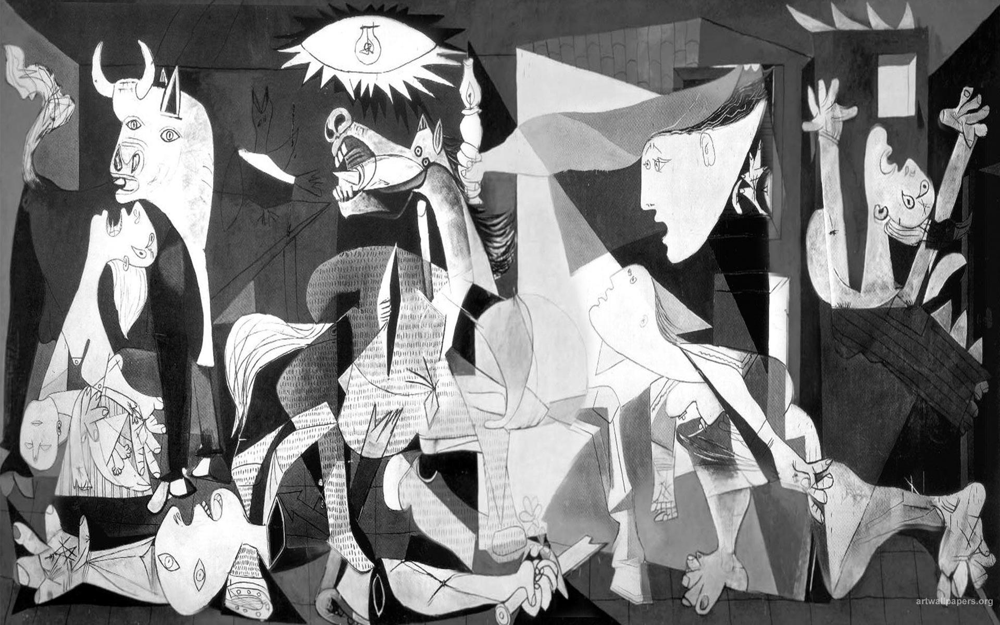

What it’s like to be an intern at the UN in New York
Looking back at 6 Months at UNHQ: the good, the bad, the ugly.
Mar 15, 2026

Hey there! you’ve stumbled upon my corner of the internet. Here, I collect some random thoughts on things friends and strangers ask me. Sometimes, I’m too lazy to answer directly and point them here instead. 100% free off AI-slop, ads, or cookies.
You can find out more about me on my main site: martenw.com.
This is what most people ask for. I had the crazy opportunity to be an intern at the UN in NY, here’s how I liked it (it was a fever dream; in a good way) and how I got there.
I just hate planes; the whole experience with extremely small seats, ugly airports and an abysmal environmental footprint. And because society has not invented a better method of long-distance transportation yet, I am bound to take a train everywhere I want to go.
Well, sometimes studying economics, with its unrealistic models and bad policy advice, just drives you mad (while at other times it can be beautiful). These are more about the first part:
links to random things I found on the internet. more →